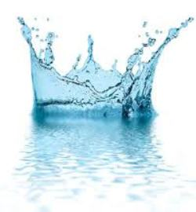
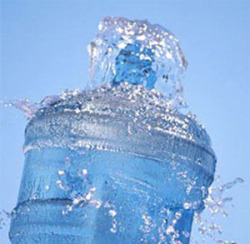
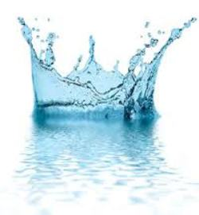
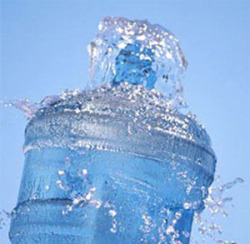
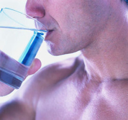
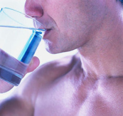

 

Как государство контролирует качество питьевой воды?
Экология в городах – одна из основных проблем современности. От загрязненного воздуха мы спасаемся по выходным на природе, выбираем натуральные продукты, и, конечно же, стараемся пить очищенную питевую воду. Но многие из нас не доверяют производителям, продающим питьевую воду, предпочитая очищать ее фильтрами, и совершенно забывая, что государство контролирует производителей и следит за качеством выпускаемой продукции.
Так как же государство осуществляет контроль над теми, кто доставляет в наш дом чистую воду, а вместе с ней здоровье, красоту и благополучие?
Во-первых, как и все организации, поставщики питьевой воды, как предприниматели, состоят на учете в налоговых органах, и платят налоги и находятся под полным контролем государства.
Во-вторых, для киосков-точек продажи воды тщательно выбирается местоположение. С 15 августа 2010 года государство запрещает располагать такие киоски во дворах жилых домов. Но для удобства потребителей организации стараются располагать такие точки продажи воды как можно ближе к домам, и Вы наверняка видели один-два киоска с водой совсем недалеко от вашего дома.
Как и продавцы продовольственных товаров, работники сети киосков по продаже воды обязаны проходить предварительный и периодический медицинский осмотр.
И все-таки, самый главный вопрос – это контроль за качеством самой питьевой воды. К сожалению, не существует никакого ГОСТа, в котором описано, каким нормам и требованиям должна соответствовать питьевая вода. Поэтому поставщики воды ориентируются на санитарные правила и нормативы (СанПиН). Качество питьевой воды и контроль за ним регламентируется СанПиН «Питьевая вода. Гигиенические требования к качеству воды, расфасованной в емкости. Контроль качества». Оно обеспечивает нам, как потребителям, что купленная нами вода будет добыта из надежного источника, и ее качество соответствует всем нормам.
В зависимости от содержания в воде примесей ее подразделяют на первую и высшую категорию. Вода первой категории полностью соответствует всем критериям, ее еще называют водой питьевого качества. Она безопасна и безвредна. Вода высшей категории также соответствует всем нормам, и не только безопасна и безвредна, но еще и полезна, так как добыта из подземных источников.
Качество воды определяют по таким показателям, как цвет, вкус, расфасованная вода должна быть безопасна для потребления человеком по микробиологическим, паразитологическим и радиологическим показателям, безвредна по своему химическому составу.
В Пермском крае также есть свой закон, регламентирующий качество воды «О безопасности питьевой воды». Этот закон регламентирует контроль над производством воды, ее хранением, доставкой ее в пункты ее реализации и непосредственно саму продажу воды.
Естественно, что водопроводная вода не обладает такими качествами, какие предписывает закон питьевой воде. Осуществлять такой контроль за фильтрами для воды тоже не представляется возможным.
Таким образом, самый надежный вариант – покупать воду, поставщик которой находится под контролем государства. Вы можете не бояться приобретать воду в киоске рядом с Вашим домом. Государство надежно позаботилось о том, чтобы покупаемая Вами вода была качественной, и не приносила вреда Вам и Вашим близким, а только здоровье, красоту и благополучие.